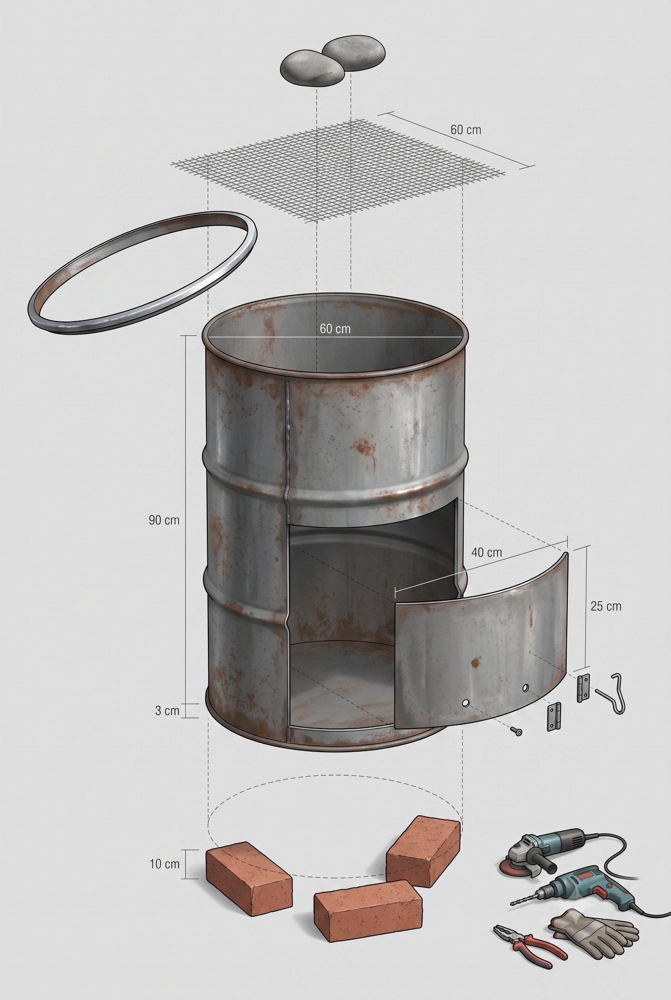
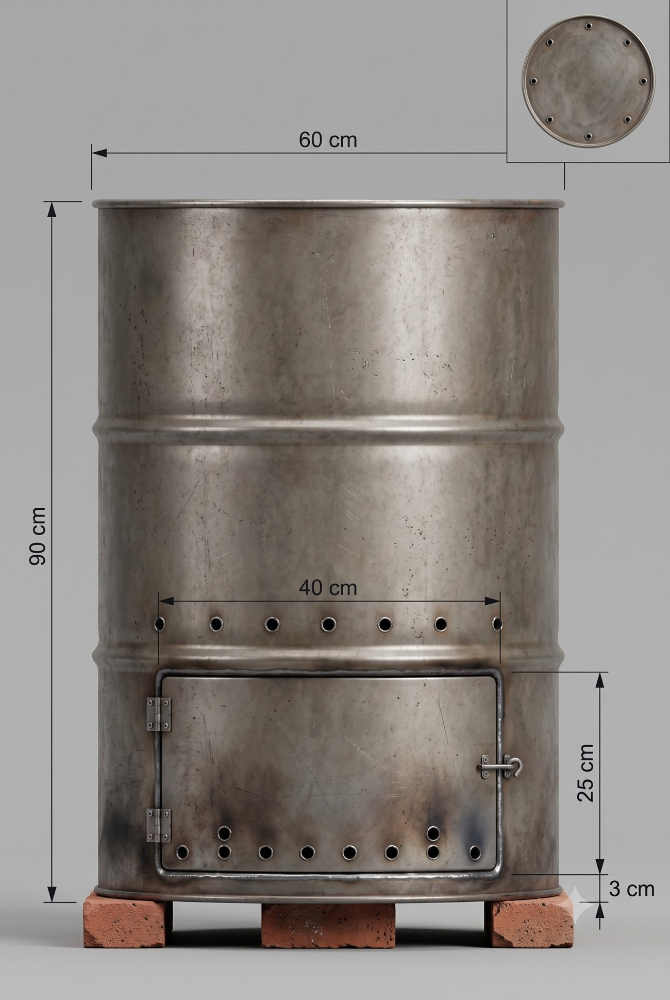
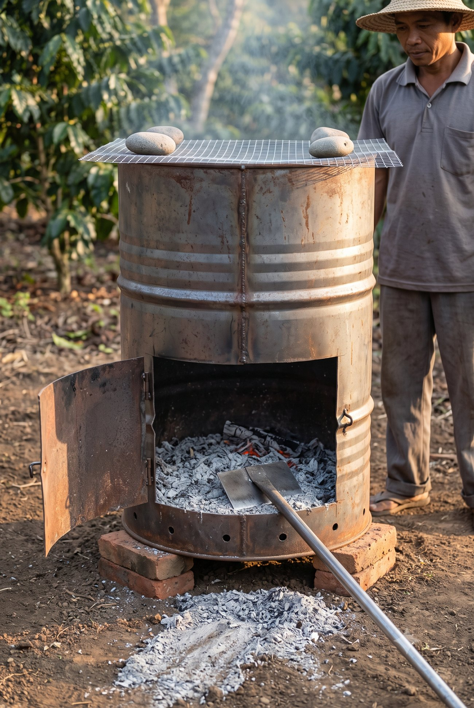
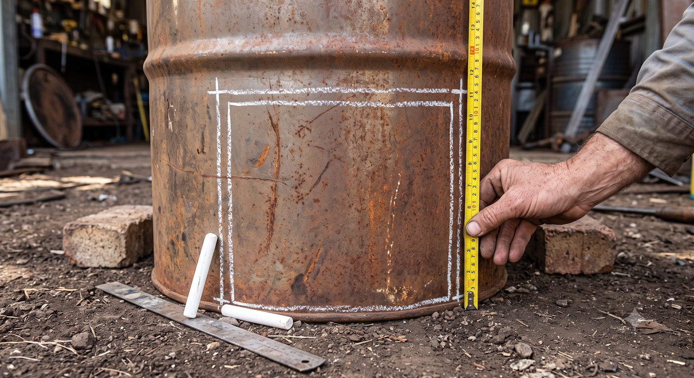
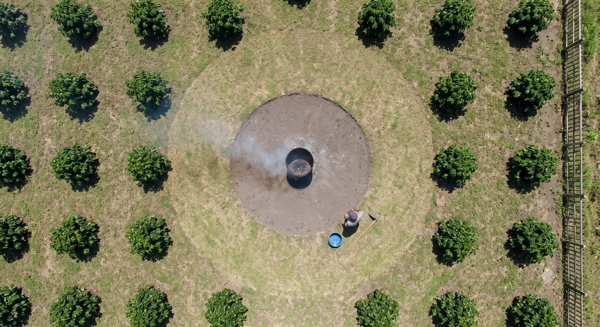

Sisa pangkasan · gulma · kayu tebangan — dan tong bakar sebagai langkah pertama
Disusun 29 Juli 2026 · direvisi menyeluruh 1 Agustus 2026 · Addendum atas SOP Master Robusta Ngantang — menambah, tidak menggantikan
Apa yang berubah pada revisi 1 Agustus 2026 — dan kenapa.
Yang berubah
Sebabnya
Aturan api soal lereng dibatalkan
Kebun ini datar, bukan di lereng gunung. Aturan lama "letakkan kiln di bagian bawah lereng" tidak berlaku dan sudah dihapus. Kabar baiknya: di lahan datar bara tidak menggelinding, jadi area bakar justru lebih mudah dan lebih aman disiapkan.
Gulma dipindah dari "mulsa" ke "bakar"
Tiga gulma yang mendominasi kebun ini semuanya berkembang biak lewat potongan batang dan akar. Mencacahnya sama dengan menanamnya.
Biochar dimundurkan jadi tahap 2; tahap 1 adalah tong bakar sederhana
Pertimbangan tenaga: kebun hanya dikerjakan Wakif dan Lek Nardi. Drum biochar menuntut penjagaan 2–4 jam per bakar plus pendinginan semalam. Tong bakar tidak. Drumnya sama — nanti tinggal ditambah lubang dan tutup.
Semua ukuran diberi padanan tubuh
Supaya bisa dikerjakan di kebun tanpa membawa meteran.
1 Prinsip inti
Pisahkan berdasarkan tiga hal: ukuran, sehat atau sakit, dan cara ia berkembang biak.
Bukan "semua dibakar", bukan pula "semua dikompos".
Bakar terbuka menghilangkan hampir seluruh nitrogen, sekitar 25% fosfor, dan 5–60% sulfur. Bahan organik tanah tercatat turun dari 15,63 menjadi 11,78 g/kg. Sebaliknya, mulsa pangkasan pada kebun kopi justru menaikkan C dan N tanah — pada sistem kopi bernaung tercatat sekitar 65 Mg/ha bahan kering selama 3 tahun membawa ±27,5 Mg/ha karbon dan ±530 kg/ha nitrogen.
Artinya membakar semuanya berarti membuang hara yang justru sedang kita beli mahal-mahal dalam bentuk pupuk. Tapi ada pengecualian yang tidak boleh dilanggar — bahan yang sakit dan gulma yang berkembang biak lewat potongan. Untuk keduanya, api bukan pemborosan melainkan alat sanitasi.
Satu catatan yang sering terlewat. Mengembalikan pangkasan memang menaikkan nitrogen tanah — tetapi fosfor dan kalium justru terkuras, karena keduanya ikut terangkut keluar bersama biji panen. Jadi mulsa bukan pengganti pemupukan P dan K; ia melengkapi, bukan menggantikan. (Pruning Paradox — lihat Rujukan A.4)
2 Ukuran praktis di kebun — tanpa meteran
Kalibrasi sekali, pakai seterusnya. Ukur satu kali saja dengan meteran: berapa cm satu jengkal Anda, satu langkah biasa Anda, dan satu hasta Anda. Catat di HP. Angka di bawah adalah rata-rata orang dewasa — milik Anda mungkin meleset 1–2 cm, dan untuk pekerjaan kebun itu tidak masalah.
Ukuran
Patokan di badan atau alat
Dipakai untuk
1 cm
setebal jari kelingking
Tebal pita kompos kambing
2–3 cm
satu ruas jari telunjuk — ujung sampai buku pertama
Tebal tanah penutup akar · batas ranting aliran 2
5 cm
dua ruas jari · atau lingkaran jempol bertemu telunjuk
Tebal mulsa setelah memampat · batas "kayu besar"
8 cm
empat jari dirapatkan
Tinggi lubang udara bawah pada drum
10 cm
selebar kepalan tangan
Tebal mulsa saat baru ditebar
20 cm
satu jengkal — ibu jari sampai kelingking terentang
Tebal abu Kelud · jarak mulsa dari batang · lebar pita kompos
25 cm
satu panjang sepatu
Jarak antar-lubang bor pada tunggak
40 cm
dua jengkal · atau sedalam mata cangkul ditancap penuh
Diameter leher pohon yang dikosongkan · dalam & lebar rorak
50 cm
satu hasta — siku sampai ujung jari · setinggi lutut
Panjang lubang bor tunggak · tinggi tumpukan bahan
90 cm
setinggi pinggang · sepanjang gagang cangkul
Tinggi drum 200 liter
1 m
satu langkah lebar
Panjang rorak · jarak aman terdekat
3 m
empat langkah biasa
Jarak antar-baris kopi
5 m
tujuh langkah biasa
Radius bersih di sekeliling area bakar
10 m
empat belas langkah biasa
Jarak area bakar dari batas tetangga
Untuk isi dan berat — pakai wadah, bukan timbangan
Wadah
Isi
Setara
Ember biasa
± 10 liter
± 5 kg kompos kambing matang = jatah satu pohon
Ember cat bekas
± 20 liter
± 10 kg kompos = jatah dua pohon
Karung pupuk 50 kg
± 60 liter
Cukup untuk ± 10 pohon
Drum 200 liter
—
Sekali isi ± 4 karung penuh ranting kering
Aturan lapangan paling gampang diingat: satu ember, satu pohon. Tidak perlu menimbang apa pun.
Untuk mata bor
Mata bor
Sebesar apa
Untuk
Ø 3 mm
sebesar lidi sapu
Lubang asap di tutup drum (tahap 2)
Ø 5 mm
sebesar tusuk sate
Lubang udara tengah drum (tahap 2)
Ø 8 mm
sebesar batang pensil
Lubang udara bawah drum
Ø 12–20 mm
sebesar jari kelingking sampai jari telunjuk
Lubang bor pada tunggak
3 Delapan aliran residu — aturan terkunci
Aliran
Bahan
Perlakuan
Alasan
1 · Hijau
Wiwilan segar, daun hijau
Mulsa langsung di piringan, atau masuk alur/rorak
C:N rendah, cepat terurai, menjaga kelembapan
2 · Ranting kecil < 2 cm — seruas jari
Ranting pangkasan kering
Cacah dengan chopper → mulsa antar-baris atau isi alur
Chopper sudah jadi aset kebun sejak Mei 2026
3 · Cabang sedang 2–5 cm — sampai lingkaran jempol-telunjuk
Cabang pangkasan
Cacah bila chopper sanggup; bila tidak → tong bakar
Terlalu keras untuk terurai cepat
4 · Kayu besar > 5 cm & bonggol
Batang, cabang besar, potongan tunggak
Tong bakar(tahap 2: drum biochar)
Lignin tinggi — bertahun-tahun kalau hanya ditumpuk
5 · Bahan SAKIT
Kayu tunggak berjamur, ranting dieback, pohon bertali merah, cabang bergerek
Musnahkan dengan api. JANGAN dikompos, JANGAN ditumpuk
Ini inokulum penyakit — sumber penularan, bukan bahan organik
Keringkan di terpal 3–5 hari → BAKAR. Jangan dicacah, jangan jadi mulsa, jangan dikompos
Berkembang biak dari potongan batang & akar — lihat bagian 4
7 · Daun pisang kering
Pelepah dan daun pisang yang sudah cokelat
Bakar bersama aliran 3–4
Bervolume besar, lambat lapuk, dan pisang adalah inang nematoda yang tidak kita inginkan berkembang
8 · Gedebog pisang
Batang pisang basah setelah ditebang
Cacah → kompos langsung di piringan
Kadar air & kalium tinggi, cepat lumer jadi bahan organik. Bonggol dan tunasnya tetap dibongkar tuntas lalu masuk aliran 6
Satu-satunya bagian pisang yang tidak boleh dikompos adalah bonggol dan tunasnya. Sisa bonggol di dalam tanah menjadi tempat bertahan nematoda Pratylenchus coffeae — hama yang menyerang akar kopi. Bongkar sampai tuntas, keringkan, lalu bakar.
4 Kenapa gulma di kebun ini justru harus dibakar
Untuk kebanyakan kebun, "gulma dijadikan mulsa" adalah nasihat yang benar. Di kebun ini tidak — dan sebabnya spesifik pada jenis yang tumbuh di sini.
Gulma
Cara ia berkembang biak
Akibat kalau dicacah jadi mulsa
Sembung rambat Mikania micrantha
Setiap buku batang bisa berakar. Satu potongan sepanjang seruas jari yang punya satu buku sudah cukup jadi tanaman baru
Satu gerobak cacahan = ribuan bibit baru ditanam merata di piringan. Ia juga bersifat alelopati — mengeluarkan zat yang menghambat tumbuhan di sekitarnya
Rumput lulangan / torpedo Panicum repens
Rimpang bawah tanah — satu buku rimpang saja tumbuh kembali, dan mampu menembus ke permukaan dari kedalaman satu hasta
Mencangkul tanpa membakar sisanya = memperbanyak dan menyebarkan
Grinting Cynodon dactylon
Geragih di atas tanah dan rimpang di bawah tanah sekaligus
Menjadi hamparan padat yang bersaing langsung dengan akar dangkal kopi
Untuk ketiganya, mencacah bukan membunuh — mencacah adalah menanam.
Kompos tidak cukup panas untuk membunuhnya. Menonaktifkan rimpang dan biji gulma menuntut suhu tinggi yang merata di seluruh tumpukan selama beberapa hari — kondisi yang sulit dijamin pada tumpukan kompos kebun berskala kecil. Bagian tepi tumpukan hampir selalu tidak pernah cukup panas. Karena itu untuk aliran 6, jalur yang dipakai adalah keringkan lalu bakar, bukan kompos.
Herbisida tidak menyelesaikan ini. Herbisida yang dipakai di kebun ini sekitar Mei 2026 bermerek NOXONE — bahan aktifnya parakuat diklorida, herbisida kontak. Artinya ia hanya mematikan bagian tanaman yang terkena semprotan; rimpang di bawah tanah tetap hidup dan akan tumbuh kembali. Parakuat juga terikat kuat pada partikel tanah dan termasuk bahan yang dilarang dalam sertifikasi Rainforest Alliance — hal yang perlu diperhatikan mengingat jalur pembeli spesialti kita. Nomor pendaftaran yang tercatat: RI. 01030120031907. Perlu dibackfill ke Form Input dashboard.
Cara mengeringkan yang benar
1
Alasi terpalJangan menumpuk gulma langsung di atas tanah — buku batang yang menyentuh tanah lembap akan berakar dalam hitungan hari. Terpal, karung bekas, atau lantai semen.
2
Jemur 3–5 hariTipis saja, jangan menggunung. Balik sekali. Siap dibakar kalau daunnya sudah remuk saat diremas.
3
Langsung ke tongJangan menunda sampai musim hujan datang. Gulma kering yang kehujanan akan hidup kembali dari rimpangnya.
5 Kenapa jangan menumpuk apa pun di pinggir kebun
Tumpukan ranting dan tunggak menyimpan penyakit sekaligus hama. Potongan cabang yang terinfestasi penggerek menjadi reservoir serangga dewasa yang akan keluar lagi dan menyerang pohon sehat. Untuk bahan yang sudah terinfestasi, membakar adalah tindakan yang diakui secara agronomis.
Ini konsisten dengan validasi Bu Alvi (BRIN) atas tindakan Wakif pada kasus K3-P01: menebang yang terinfeksi, menyingkirkan kayu lapuk, dan memusnahkan sisanya sudah tepat untuk mencegah penularan.
Di lahan datar ada satu bahaya tambahan yang tidak ada di lereng: tumpukan membendung air. Di lereng, air mengalir mengitari tumpukan. Di lahan datar, tumpukan menjadi tanggul kecil yang menahan air hujan sehingga menggenang lebih lama — persis kondisi yang kita duga menyebabkan busuk akar. Karena itu tumpukan apa pun di pinggir kebun dilarang, bukan hanya tumpukan kayu.
6 Tong bakar — desain tahap 1
Alat tahap pertama sengaja dibuat sesederhana mungkin: satu drum bekas 200 liter, tutup atas dibuka penuh, satu pintu di bawah. Bahan dimasukkan dari atas dan dinyalakan dari bawah lewat pintu. Pintu yang sama dipakai untuk mengeluarkan abu.
Spesifikasi
Bagian
Ukuran
Catatan
Drum
Bekas 200 liter, baja Ø 57–60 cm · tinggi 88–90 cm tiga jengkal · setinggi pinggang
Tebal dinding minimal 1,2 mm. Umur pakai 5–10 kali bakar sebelum dinding menipis
Tutup atas
Dipotong habis
Pada tahap 1 memang terbuka. Tutupnya jangan dibuang — dipakai lagi di tahap 2
Pintu bawah
40 × 25 cm, sisi bawah ambang bawah hanya 3 cm dari dasar (seruas jari) — rata dengan lantai dalam drum
Ambang sengaja serendah mungkin supaya abu bisa langsung ditarik keluar tanpa terhalang bibir. Jangan lebih rendah lagi: 3 cm itu tepat di atas bibir gulung (rolled chime) — bagian yang menjaga drum tetap bulat. Engsel 2 buah di sisi kiri, kait kawat di kanan. Bor 2 lubang Ø 8 mm (sebesar pensil) pada daun pintu di garis 8 cm, melengkapi 6 lubang di dinding jadi 8
Dasar
Dibiarkan utuh
Abu tertampung, tidak berhamburan. Bor 4–6 lubang Ø 8 mm kalau drum akan kehujanan, supaya air bisa tiris
Alas
3 batu bata / batu kali drum terangkat ± 10 cm (sekepalan)
Udara masuk dari bawah · tanah tidak terpanggang · drum tidak berkarat kena tanah lembap
Penahan percik
Kawat kasa / ram kawat ± 60 × 60 cm, lubang ± 5 mm
Wajib musim kemarau. Ditindih dua batu. Inilah yang membedakan tong bakar dari tumpukan bakar terbuka
Alat pendamping
Serok / cangkul kecil bergagang panjang
Untuk mengeruk abu dari pintu bawah tanpa menggulingkan drum
✅ GAMBAR AI — ANGKANYA SUDAH DIPERIKSA — tujuh angka yang tercetak di gambar ini (60 · 90 · 60 · 40 · 25 · 3 · 10) sudah dicocokkan satu per satu dengan tabel ukuran kita, dan semuanya benar. Boleh dipakai sebagai acuan kerja.

12345
Tutup bundar DIBUANG — melayang ke samping karena tidak dipasang. Tapi jangan dibuang beneran: dipakai lagi di tahap biochar
Bukaan pintu rata lantai drum — perhatikan lantai dalam terlihat menerus sampai ambang. Inilah yang membuat abu bisa ditarik keluar tanpa terhalang
Sisa baja di bawah bukaan cuma 3 cm(seruas jari) — jangan dipotong lebih rendah lagi, itu bibir gulung yang menjaga drum tetap bulat
2 engsel di kiri + kait kawat di kanan, plus 2 lubang Ø 8 mm (sebesar pensil) di daun pintu
Alat yang dibutuhkan — gerinda potong, bor, tang, sarung tangan
Ukuran sudah tercetak di gambarnya sendiri dan sudah kami periksa satu per satu. Bulatan merah hanya menyorot hal yang tidak bisa dijelaskan angka.
🖼️ Gambar ini dibuat dengan bantuan AI sebagai alat bantu memahami, bukan foto kebun kita. Jangan dipakai sebagai bukti kondisi lapangan — baik ke BRIN, calon mitra, maupun laporan ke umat. Begitu ada foto lapangan yang sebenarnya, foto itu yang menggantikannya.
Bentuk jadinya — gambar ukuran & wujud saat dipakai
✅ GAMBAR AI — ANGKANYA SUDAH DIPERIKSA — lima angka yang tercetak (90 · 60 · 40 · 25 · 3) sudah dicocokkan satu per satu dengan tabel ukuran kita, dan semuanya benar. Boleh dicetak dan dibawa ke tukang.

1234
Ambang bawah 3 cm(seruas jari) — inilah angka yang paling sering salah dipotong. Jangan lebih rendah: itu bibir gulung yang menjaga drum tetap bulat
Pintu 40 × 25 cm — lebih LEBAR daripada tinggi, dan puncaknya berhenti di bawah rusuk gelang
Dua baris lubang udara — barisan bawah dekat dasar, barisan atas di tengah badan. Jumlah lubang di gambar ini tidak persis; yang mengikat adalah tabel di atas: 8 lubang Ø 8 mm di 8 cm & 6 lubang Ø 5 mm di 40 cm
Sisipan tampak atas — memperlihatkan lubang mengelilingi drum, bukan cuma di satu sisi
Bawa gambar ini ke tukang. Kelima angkanya sudah kami periksa satu per satu terhadap tabel ukuran.
🖼️ Gambar ini dibuat dengan bantuan AI sebagai alat bantu memahami, bukan foto kebun kita. Jangan dipakai sebagai bukti kondisi lapangan — baik ke BRIN, calon mitra, maupun laporan ke umat. Begitu ada foto lapangan yang sebenarnya, foto itu yang menggantikannya.
🖼️ GAMBAR BUATAN AI — angka atau tulisan yang tercetak DI DALAM gambar berasal dari AI dan tidak dijamin benar. Yang sah hanyalah bulatan bernomor merah dan daftar ukuran di bawahnya — itu tulisan kita.

1234
Abu & bara sisa pembakaran di dasar drum — beginilah isinya setelah satu kali bakar
Ditarik keluar pakai serok bergagang panjang, drum tidak digulingkan. Abu langsung jatuh ke tanah di depan pintu
Kawat kasa ditindih dua batu — penahan percik, wajib saat kemarau
Daun pintu terbuka ke kiri pada dua engsel; kait kawat di sisi kanan
⚠️ Satu hal yang MELESET di gambar ini: sisa baja di bawah bukaan terlihat ± 10 cm (setinggi kepalan), padahal seharusnya 3 cm saja. Akibatnya abu tampak terbendung di dalam. Ikuti gambar ukuran di sebelah kiri, bukan gambar ini. Yang benar dari gambar ini: suasana, alat, kasa, dan cara menarik abu.
🖼️ Gambar ini dibuat dengan bantuan AI sebagai alat bantu memahami, bukan foto kebun kita. Jangan dipakai sebagai bukti kondisi lapangan — baik ke BRIN, calon mitra, maupun laporan ke umat. Begitu ada foto lapangan yang sebenarnya, foto itu yang menggantikannya.
Kenapa dua gambar. Yang kiri mengunci ukuran — itu yang dibawa ke tukang. Yang kanan menunjukkan wujudnya saat sudah dipakai — itu yang dibayangkan sebelum memutuskan. Kalau keduanya berbeda, yang kiri dan tabel ukuran yang benar.
🖼️ GAMBAR BUATAN AI — angka atau tulisan yang tercetak DI DALAM gambar berasal dari AI dan tidak dijamin benar. Yang sah hanyalah bulatan bernomor merah dan daftar ukuran di bawahnya — itu tulisan kita.

12345
Garis kapur atas — puncak pintu, 28 cm dari dasar. Harus berhenti di bawah rusuk gelang yang ada di 30 cm
Garis kapur bawah — hampir menyentuh bibir drum, hanya 3 cm(seruas jari)
Meteran — mengukur celah 3 cm itu saja, bukan yang lain
Tanda silang di empat sudut — supaya garis tidak hilang saat kena tangan
Kapur dan penggaris besi — garis lurus jauh lebih penting daripada garis rapi
Ukur dulu, baru gerinda. Ini langkah yang paling sering dilewati — dan yang paling mahal kalau salah, karena potongan tidak bisa dibatalkan.
🖼️ Gambar ini dibuat dengan bantuan AI sebagai alat bantu memahami, bukan foto kebun kita. Jangan dipakai sebagai bukti kondisi lapangan — baik ke BRIN, calon mitra, maupun laporan ke umat. Begitu ada foto lapangan yang sebenarnya, foto itu yang menggantikannya. Angka pada penanda berasal dari spesifikasi kita sendiri, bukan dari gambarnya.
Cara pakai
#
Langkah
1
Pastikan bahan sudah kering. Bahan basah menghasilkan asap pekat dan mengganggu tetangga.
2
Isi dari atas, maksimal tiga perempat drum. Susun longgar — yang padat justru sulit menyala.
3
Nyalakan dari pintu bawah dengan sedikit daun kering. Tutup pintunya begitu api menyala stabil.
4
Pasang kawat kasa di mulut drum, tindih batu.
5
Tunggui sampai api mati. Umumnya 40–90 menit untuk satu isi. Jangan ditinggal.
6
Biarkan dingin. Abu baru dikeruk keesokan harinya — buka pintu, tarik abu langsung keluar dengan serok bergagang panjang. Abu yang tampak dingin di permukaan bisa masih membara di dalam.
7
Catat ke dashboard: tanggal · kebun · aliran residu · perkiraan jumlah karung masuk.
Kenapa tong bakar dulu, bukan langsung biochar. Tong bakar butuh penunggu 40–90 menit dan selesai hari itu juga. Drum biochar butuh penjagaan suhu 2–4 jam plus pendinginan tertutup 12–24 jam, dan hasilnya harus di-charge dulu sebelum bisa dipakai. Dengan tenaga yang ada sekarang — Wakif dan Lek Nardi — tahap 1 bisa jalan minggu ini; tahap 2 realistis setelah ada tambahan tenaga. Drumnya sama, jadi tidak ada uang yang terbuang.
7 Area bakar tetap — satu titik per kebun
🖼️ GAMBAR BUATAN AI — angka atau tulisan yang tercetak DI DALAM gambar berasal dari AI dan tidak dijamin benar. Yang sah hanyalah bulatan bernomor merah dan daftar ukuran di bawahnya — itu tulisan kita.

123456
Drum di titik tetap — satu titik per kebun, disiapkan sekali, dipakai seterusnya
Cincin tanah mineral 2 m(tiga langkah) — dikupas bersih. Pakai kerukan abu vulkanik untuk alasnya
Radius bersih 5 m(tujuh langkah) — tanpa rumput kering, tanpa tumpukan bahan
Kopi terdekat di luar lingkaran 5 m — panas radiasi menghanguskan daun; ini sudah pernah terjadi di K4
Batas tetangga ≥ 10 m(empat belas langkah) — kalau tak memungkinkan, ambil titik terjauh dan beri tahu tetangga lebih dulu
Air + sekop sudah di lokasi — sebelum api dinyalakan, bukan diambil setelah ada masalah
Dua lingkaran, dua fungsi berbeda: cincin dalam mencegah api merambat lewat tanah, lingkaran luar mencegah panas dan percikan mengenai tanaman.
🖼️ Gambar ini dibuat dengan bantuan AI sebagai alat bantu memahami, bukan foto kebun kita. Jangan dipakai sebagai bukti kondisi lapangan — baik ke BRIN, calon mitra, maupun laporan ke umat. Begitu ada foto lapangan yang sebenarnya, foto itu yang menggantikannya. Angka pada penanda berasal dari spesifikasi kita sendiri, bukan dari gambarnya.
Bukan berpindah-pindah. Satu titik tetap per kebun, disiapkan sekali, dipakai seterusnya. Ini menyelesaikan tiga hal sekaligus: keamanan, hubungan dengan tetangga, dan pengumpulan abu di satu tempat sehingga mudah ditakar.
Syarat
Ukuran
Alasan
Radius bersih
≥ 5 m (tujuh langkah)
Tidak ada rumput kering, tumpukan bahan, atau ranting menggantung di dalam radius ini
Cincin tanah mineral
Selebar 2 m (tiga langkah)
Tanah dikupas sampai tidak ada bahan organik yang bisa merambat. Tanah kerukan abu vulkanik sangat cocok untuk alas ini — sekaligus menyelesaikan pertanyaan mau dibuang ke mana
Jarak ke kopi produktif
≥ 5 m (tujuh langkah)
Panas radiasi menghanguskan daun kopi terdekat — ini sudah pernah terjadi di K4
Jarak ke batas tetangga
≥ 10 m (empat belas langkah)
Kekhawatiran utama di K1–K3 yang berbatasan langsung. Kalau tidak memungkinkan, pilih titik terjauh yang ada dan beri tahu tetangga sebelum operasi pertama
Air atau tanah urug
1 ember penuh + 1 sekop
Sudah berada di lokasi sebelum api dinyalakan, bukan diambil setelah ada masalah
Waktu
Sore hari
Kelembapan naik, angin mereda. Batalkan bila angin kencang — tanpa perkecualian
Lahan datar justru menguntungkan di sini. Aturan lama menyuruh meletakkan titik bakar di bagian bawah lereng karena api merambat naik. Di kebun ini persoalan itu tidak ada: bara tidak menggelinding, api tidak punya arah rambat menanjak, dan alas rata jauh lebih mudah disiapkan. Yang tetap harus dijaga adalah angin dan jarak — bukan kemiringan.
Area bakar ini kelak menjadi stasiun biochar. Alas yang sama, cincin tanah yang sama, jarak aman yang sama. Menyiapkannya sekarang berarti tahap 2 tinggal menaruh drum.
8 Aturan api — wajib, terutama musim kemarau
Musim kemarau membuat bahan gampang menyala — itu keuntungannya. Musim kemarau juga membuat api terbuka paling berbahaya — itu risikonya. Jawabannya bukan menunda pekerjaannya, tapi mengurung apinya di dalam drum.
#
Aturan
B5.1
Tidak ada tumpukan bakar terbuka. Semua pembakaran di dalam drum, di area bakar tetap.
B5.2
Lokasi: area bakar tetap yang sudah disiapkan (bagian 7). Aturan lama soal "bagian bawah lereng" dibatalkan — kebun ini datar.
B5.3
Jarak ≥ 5 m(tujuh langkah) dari kopi produktif dan dari bahan kering lain; ≥ 10 m(empat belas langkah) dari batas tetangga.
B5.4
Cincin tanah mineral selebar 2 m(tiga langkah) mengelilingi titik bakar.
B5.5
Kawat kasa penahan percik terpasang setiap kali membakar di musim kemarau. Tanpa kecuali.
B5.6
Air atau tanah urug siap di lokasi sebelum api dinyalakan. Jangan tinggalkan api tanpa penunggu.
B5.7
Waktu: sore hari.Batalkan bila angin kencang.
B5.8
Abu dikeruk keesokan harinya, tidak pada hari yang sama.
B5.9
Hukum: UU 32/2009 Pasal 69 mengatur pembakaran lahan; ada pengecualian terbatas bagi masyarakat lokal dengan luasan tertentu, dan kebun ini hanya 0,49 ha. Namun kebijakan nasional tetap zero-burning, sehingga posisi kita adalah pembakaran terkurung di dalam drum, bukan pembakaran lahan. Beri tahu tetangga dan perangkat desa sebelum operasi pertama. Bunyi pasal perlu dikutip persis sebelum dipakai di dokumen publik — lihat Rujukan B.
9 Abu — berapa yang boleh kembali ke tanah
🚨 Baca ini dulu — di kebun ini abu BUKAN pembenah tanah. Nasihat umum "abu kayu bagus untuk tanah" berlaku pada tanah masam. Kebun ini tidak masam: uji tanah 16 Juni 2026 menunjukkan pH 6,2 — sudah ideal untuk Robusta, dan catatan uji itu sendiri berbunyi "pH tanah sudah memadai. Tidak diperlukan pengapuran."
Abu kayu bersifat basa dan bekerja seperti kapur. Menaburkannya di kebun ini berarti mendorong pH naik melewati batas yang justru sudah pas — dan pH yang telanjur naik jauh lebih sulit diturunkan daripada dinaikkan.
Tapi ada tarik-menarik yang jujur harus disebut: abu juga membawa kalium, dan kalium kebun ini memang rendah (16,4 mg/100g). Jadi satu bahan yang sama membawa satu hal yang kita butuhkan dan satu efek yang tidak kita inginkan.
Putusannya: ambil kaliumnya lewat jalur lain, jangan lewat abu.
Kalium sebaiknya datang dari KCl (sudah ada di SOP) dan kompos kambing. Keduanya memberi kalium tanpa mendorong pH naik.
Aturan
Alasan
Tujuan utama abu: alas area bakar dan jalan setapak kerja — bukan kebun
Di situ sifat basanya tidak merugikan siapa pun, dan volumenya terserap habis
Kalau tetap masuk kebun: maksimal ± 0,25 kg per pohon per tahun ± segenggam penuh, ditabur tipis
Seperempat dari anjuran umum untuk tanah masam, justru karena pH kita sudah pas. Angka ini sengaja konservatif
Lebih aman: campurkan ke tumpukan kompos, jangan tabur langsung
Bahan organik meredam lonjakan pH, dan kaliumnya tetap terbawa masuk
Uji pH ulang sebelum menambah tahun berikutnya
Ini satu-satunya cara tahu apakah kita sudah kelewatan. Tanpa uji, jangan diulang
Tabur di pita tepi tajuk, jangan di leher batang
Abu bersifat kaustik saat basah; menempel di pangkal batang berisiko melukai kulit
Jangan bersamaan dengan Urea atau ZA — beri jeda 2–4 minggu
Abu bersifat basa; bertemu pupuk amonium, nitrogennya menguap jadi gas amonia dan hilang. Pupuk mahal terbuang percuma
Sebarkan saat tidak berangin. Pakai masker
Abu halus mudah tertiup dan mengiritasi mata serta saluran napas
Abu dari bahan sakit tetap aman dipakai
Api menghancurkan patogen. Yang berbahaya adalah kayunya, bukan abunya
Jangan menabur tebal karena "sayang dibuang". Itu cara paling cepat merusak pH yang sekarang sudah benar. Kelebihan abu punya tempat yang jelas — alas area bakar dan jalan setapak — dan di sana ia justru berguna.
10 Jalan naik ke biochar — tahap 2
Perbedaan antara tong bakar dan drum biochar hanya pada pengaturan udara. Tong bakar membiarkan udara masuk bebas sehingga bahan terbakar habis menjadi abu. Drum biochar membatasi udara sehingga bahan hanya terurai oleh panas dan menyisakan arang.
Tong bakar tahap 1
Drum biochar tahap 2
Udara
Bebas masuk
Dibatasi lubang tertentu saja
Arah nyala
Dari bawah ke atas
Dari atas ke bawah (top-down)
Tutup
Terbuka + kawat kasa
Pelat seng menutup ± 80%
Lama tunggu
40–90 menit
2–4 jam + dingin tertutup 12–24 jam
Hasil
Abu, 2–6% dari berat bahan
Arang, 25–50% dari berat bahan
Siap pakai?
Langsung tabur tipis
Harus di-charge dulu, kalau tidak justru menyerap hara tanah
Tiga tambahan pada drum yang sama — tidak perlu beli baru:
Bor 8 lubang Ø 8 mm(sebesar pensil) melingkar, 8 cm dari dasar(empat jari) — udara primer
Bor 6 lubang Ø 5 mm(sebesar tusuk sate) melingkar, 40 cm dari dasar(dua jengkal) — udara sekunder yang membakar asap
Pasang tutup pelat seng ± 60 × 60 cm dengan 4 lubang Ø 3 mm(sebesar lidi) dan satu pegangan
Ditambah satu perubahan cara: pintu bawah harus disumbat tanah liat saat mode biochar. Pintu yang bocor membuat udara masuk terus, dan arang yang sudah jadi akan habis terbakar menjadi abu.
📎 Spesifikasi lengkap tahap 2 — susunan bahan tiga lapis, suhu dan lama bakar, cara mendinginkan, cara charging tanpa akses air, hitungan biaya, serta apa yang harus dilakukan bila api mati di tengah jalan — ada di halaman tersendiri: Kajian & Referensi → Biochar & Drum Kiln.
11 Kalau ranting sudah telanjur kering
Kekhawatiran itu benar sebagian. Ranting kering punya C:N tinggi dan berlignin, memang lambat terurai. Tapi kesimpulan "kalau begitu bakar saja semuanya" melewatkan dua hal:
1
Bakar terbuka membuang nitrogenJustru nitrogen inilah yang sedang kita butuhkan dan kita beli mahal. Hara menguap ke udara, yang tersisa hanya abu — 2–6% dari berat semula.
2
Kering bukan berarti tidak bergunaKering justru syarat ideal, baik untuk tong bakar maupun untuk biochar nanti. Bahan basah menghabiskan energi hanya untuk menguapkan airnya lebih dulu.
Untuk ranting kering yang tetap ingin dikompos: cacah dulu (memperluas permukaan), tambah sumber nitrogen (pupuk kandang atau urea tipis), dan jaga kelembapan. Tanpa ketiganya, ranting kering memang akan bertahan bertahun-tahun tanpa terurai.
12 Yang perlu dicatat ke dashboard
Perkiraan volume residu per aliran (1–8) setiap kegiatan pangkasan — hitung dalam karung, bukan kilogram
Tanggal, kebun, dan jumlah isi drum setiap operasi tong bakar
Berat bahan masuk vs abu keluar — dari sini muncul angka rendemen kebun sendiri, yang kelak menggantikan angka 2–6% dari literatur
Bahan aliran 5 dan 6: asal pohon atau petak mana, plus tanggal pemusnahan → jejak audit sanitasi
Abu yang ditabur: tanggal, kebun, jumlah ember — supaya batas 1 kg/pohon/tahun bisa dijaga
Backfill catatan herbisida NOXONE (Mei 2026) ke Form Input, lengkap dengan nomor pendaftaran
13 Catatan pelaksana
⚠️ Per 1 Agustus 2026 kebun tidak punya pekerja lapangan tetap untuk pekerjaan atas maupun bawah pohon — Mas Kamto dan Pak Yasir sudah retired, dan keduanya tidak pernah benar-benar berjalan. Yang mengerjakan kebun sekarang hanya Wakif dan Lek Nardi, ditambah crew panen pada musimnya.
Seluruh pekerjaan dalam addendum ini harus dijadwalkan dengan kenyataan itu sebagai batas, bukan sebagai catatan kaki. Kerjakan Tier 1 lebih dulu: gulma aliran 6 (karena ia bertambah banyak setiap minggu ditunda) dan bahan sakit aliran 5 (karena ia menular).
14 Rujukan
Tingkat keandalan — halaman ini rujukan kerja, bukan makalah. Tiap kelompok sumber diberi tanda asal-usulnya:
Tanda
Artinya
Boleh dipakai untuk apa
✅ Tertelusur
Tautannya bisa dibuka dan diperiksa sendiri
Boleh dikutip keluar, termasuk ke BRIN
⚠️ Internal
Disebut di berkas kita, sumber aslinya tidak tercatat
Boleh dipakai bekerja, jangan dikutip sebagai temuan ilmiah
🔬 Menunggu data
Akan digantikan hasil pengukuran di kebun sendiri
Perencanaan kasar saja
A. Rujukan luar — sudah ditelusuri ✅
Mulsa pangkasan (aliran 1–2) — kenapa tidak semuanya dibakar
UC IPM Sanitation (tumpukan ranting sebagai sarang hama)
Tanpa halaman atau nomor terbitan spesifik. Klaimnya sendiri lazim di pedoman PHT, tapi belum ditautkan.
Literatur single drum kiln (pengabdian masyarakat, Indonesia)
Tanpa judul maupun penulis.
UU 32/2009 Pasal 69 (pembakaran lahan)
Ini peraturan sah yang bisa dikutip dengan nomornya; hanya saja belum ada tautan resmi yang diverifikasi di sini. Bunyi pasal beserta pengecualiannya perlu dikutip persis sebelum dipakai di dokumen publik.
Seluruh spesifikasi tong bakar — ukuran pintu 30 × 25 cm, tinggi ambang 8 cm, tiga batu bata, kasa 60 × 60 cm, isi maksimal ¾ drum
Spesifikasi kerja internal, disusun dari desain yang diusulkan Wakif ditambah praktik umum burn barrel. Bukan angka dari literatur.
Batas ukuran aliran residu (< 2 cm · 2–5 cm · > 5 cm)
Angka kerja internal — masuk akal dan lazim, tapi tidak bersumber literatur yang tercatat.
Rendemen abu 2–6% dan biochar 25–50%
Kisaran umum yang lazim disebut; belum ditautkan ke sumber spesifik, dan akan diganti hasil timbangan kebun sendiri.
Lama bakar 40–90 menit per isi drum
Perkiraan, belum pernah diukur di kebun ini.
Batas abu 0,25 kg/pohon/tahun
Angka konservatif buatan sendiri, bukan dari literatur. Anjuran umum abu kayu (0,5–1 kg) ditujukan untuk tanah masam; karena pH kebun kita sudah 6,2 dan ideal, angka itu dipotong seperempatnya sebagai pengaman. Harus dikoreksi begitu ada uji pH pasca-aplikasi.
C. Menunggu data kebun sendiri 🔬
Volume residu per aliran (1–8) tiap pangkasan — akan memberi angka karung per tahun yang sebenarnya
Rendemen tong bakar — berat bahan masuk vs abu keluar, menggantikan angka 2–6%
Lama bakar sebenarnya per isi drum, untuk merencanakan hari kerja
Kapasitas chopper — sampai diameter berapa ia benar-benar sanggup; inilah yang menentukan batas nyata antara aliran 2 dan 3
pH tanah sesudah aplikasi abu — untuk mengunci dosis yang aman
D. Rujukan internal
SOP/00_FINAL/SOP_Addendum_Sanitasi_Tunggak_dan_Manajemen_Residu_29Jul2026.md bagian B1–B7
ADR-027 (soil amendment) · Inj-1 (biochar, LANJUT) · Q8 (rorak) · CLAUDE.md bagian Bentuk Lahan Kebun (locked 31 Jul 2026) dan Pattern #22
⚠️ Anti-klaim berlebihan. Status hubungan dengan BRIN: penjajakan — belum ada MoU maupun PKS. Halaman ini tidak boleh menyebut BRIN sebagai mitra, penjamin, atau pihak yang menyetujui isinya.
Disusun 29 Juli 2026 · Rujukan dilengkapi 31 Juli 2026 · Revisi menyeluruh 1 Agustus 2026 — koreksi bentuk lahan, penambahan aliran gulma dan pisang, desain tong bakar, area bakar tetap, aturan abu, dan padanan ukuran tubuh · Wakaf Produktif Kebun Kopi Ngantang.
Status: addendum ini belum di-encode ke SOP Master DOCX — masuk daftar Pending SOP Updates.